| 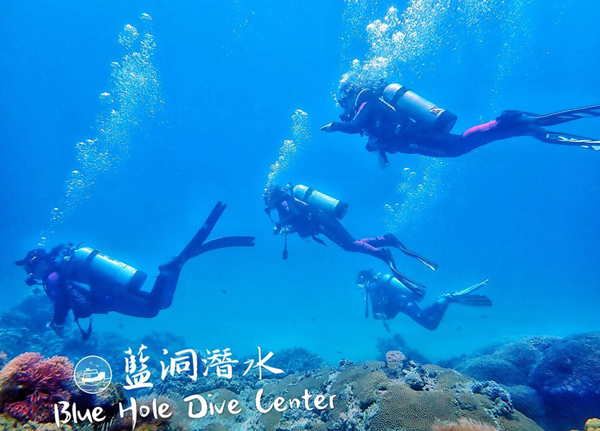 |
因為有過幾次的體驗潛水覺得海底世界超美！！只不過因為之前參加的體驗潛水，是教練拎著你游 (潛水深度不超過10米)，而我想看更美更深的海底世界、想游去哪就去哪看海底生物於是，就想要來考照一波！
我挑了一間位在屏東恆春墾丁，評價很不錯的藍洞潛水Blue Hole Dive Center，最棒的特色就是「船潛」全台唯一船潛 PADI 初階潛水員考照班 Open Water Diver！不用背超重裝備氣瓶走礁岸、也不會還要游很遠才下潛，因為是「船潛」所以可以到較遠的海域，水下世界看得更美，很幸運的我也有看到海龜耶！！也因為藍洞潛水，是在台灣南端，不會因為天氣的寒冷，除了颱風海況不宜下水，不然其實一年四季都可以潛水的唷！
| 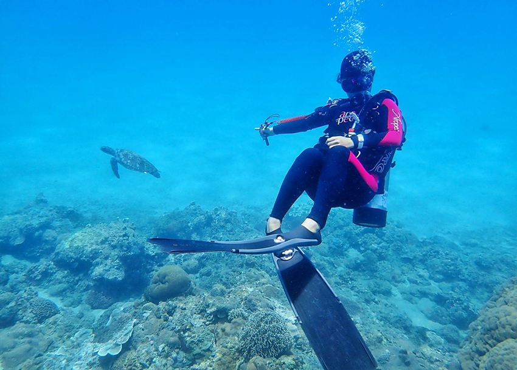 |
如果不打算潛水考照的話，來到屏東墾丁玩，不妨也安排來體驗潛水，看墾丁的海底世界，也有機會與海龜合照有些店家體驗潛水，是不會給蛙鞋的，因為才比較好控制客人，而藍洞潛水會提供給蛙鞋，如果客人狀況好的話，也會放手讓客人游看看呢！
關於潛水考照前，你需要先知道的事
| 需年滿10歲或依當地法律，年齡沒有上限，肢體殘疾亦可參加潛水，只要體力以及身心狀況良好即可，但須先作身體檢查。有以下病例者不適宜潛水，如曾患嚴重肋膜炎者，未經治療的肺腫瘤、懼幽症、高血壓、心臟病、中耳炎或癲瘸之類的疾病，有任何疑問應先向醫生諮詢。下水前請確保身心健康，感冒、鼻塞都不能下水。潛水後24小時內不得搭飛機，空中低壓會導致低氧，可能會引發潛水伕病(減壓症)，潛水前後一天也不建議飲酒 >> 資訊來源Tripbaa 趣吧。 |
水肺潛水(Scuba Diving)，如下圖示，有穿著裝備，是指使用水肺裝備在水下長時間(30~60分鐘)呼吸；自由潛水(Free diving)，是指水面吸一口氣後，閉氣下潛，想呼吸時再回到水面，在水裡的時間因人而異。而本篇文章，要分享的潛水考照，是指「水肺潛水」。
| 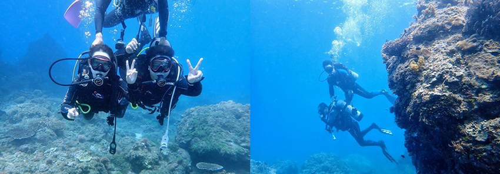 |
水肺潛水 你可以不會游泳，但是你不能怕水！因為我就是不會游泳的人~但也是就有考過了！！潛水時會使用調節器，在水中可以正常呼吸，因為會穿上蛙鞋，所以在水裡可以輕易踢動前進，也會穿上浮力調整背心(稱為BCD)，當充氣時會有正浮力，你就會浮在水面上了~只不過，我還是覺得如果會游泳的話，會更好😎
目前常見的潛水執照分為 PADI 、NAUI、SSI、ADS、CMAS 等等，比較常見的是PADI，是全球目前最大的潛水系統，因為知名度高，相對的考照費用通常也比較高。有看到別人分享，在不同國家學潛水、不同考照系統也會有價差，如果沒有牌子大一定比較好的迷思，其實就依照個人預算去選擇就可以囉！
潛水考照，你也可以選擇國外學潛 (因為國外的海域好像更美？價錢更可愛？) 可是如果你的英文不好，那就必須要找有會說中文的教練！！不然我覺得還是在台灣考就好了，考完再到國外好好的放鬆潛水！
| 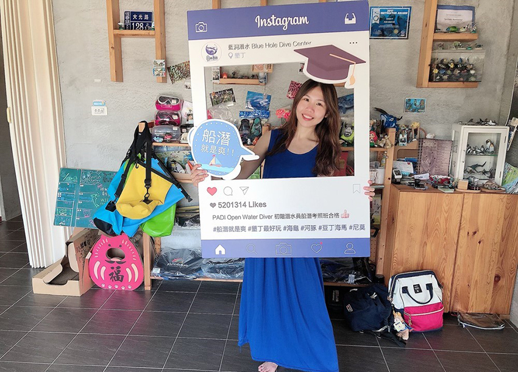 |
你需要自己準備的裝備：泳衣泳褲、隱形眼鏡 (或是你也可以戴有度數的潛水面鏡，潛店會免費提供)、拖鞋、換洗衣物、隨身碟或記憶卡存照片影片(建議32G)、個人藥品(例如暈船藥)，如果你有毛巾衣、防曬面罩/帽套、潛水手套也可以攜帶哦！ 潛水店會為你準備: 5mm厚的潛水長袖防寒衣、面鏡、蛙鞋、氣瓶、浮力調整背心BCD、潛水手錶，也會為您水下拍照~ (為響應環保，藍洞潛水不提供牙刷、牙膏、刮鬍刀、瓶裝水 ; 有提供飲水機、毛巾、沐浴乳、洗髮精、吹風機、餐具。)
我考的是PADI初階潛水員船潛考照班Open Water Diver (簡稱OW)
三天兩夜課程費用NT$15000包含：泳池訓練費用、墾丁小灣泳池及南灣公車站往返藍洞/沙撒與碼頭的接送、三天午餐、潛水輕重裝、潛水教材簽證、富邦潛水險等、免費贈送側拍照片影片等檔案。(另可加價住宿)
OW三天兩夜課程： |
前往藍洞潛水考照之前，還有一項你需要先做的事，就是要先把 PADI 的影片 看完，這樣你會更加快速地進入狀況，也比較知道你考照的課程內容。(而我就是忘了先看...導致下水，就覺得滿緊張的😓)
| 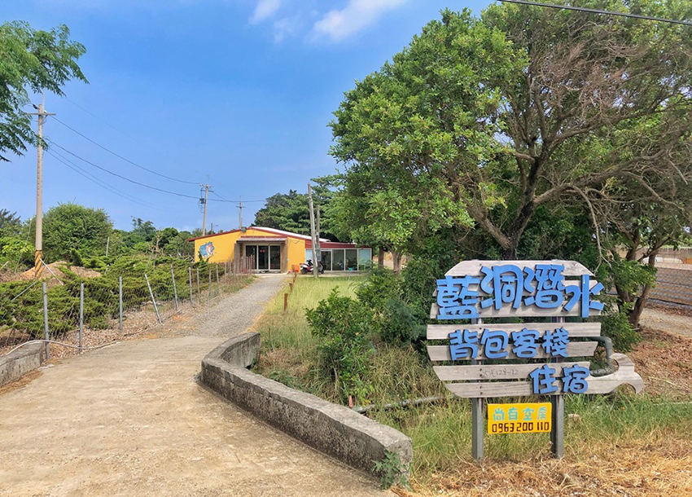 |
藍洞潛水 PADI OW考照 Day1
✔室內裝備介紹+泳池教學 (共2支氣瓶)
抵達藍洞潛水後，會帶你至你入住的房間放行李，填寫資料卡、開始解說教學，關於潛水裝備如何使用。(我們四個人的潛水考照教練有兩位：Momo和勾勾)
| 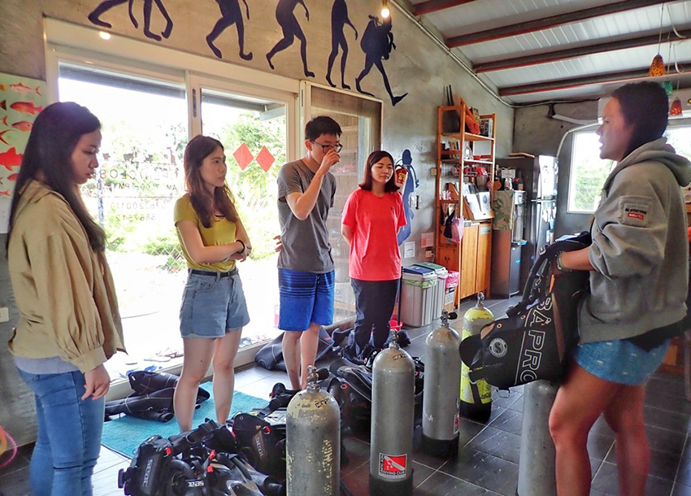 |
覺得氣瓶好重欸，再加上我的魚記憶，好容易忘記下一個步驟是什麼...不過在之後的幾天練習，終於有把步驟給記下來了，只是偶爾潛完後的上岸，我會瞬間失憶...但是我的潛伴都好優秀，感謝潛伴的耐心會指導我😘
| 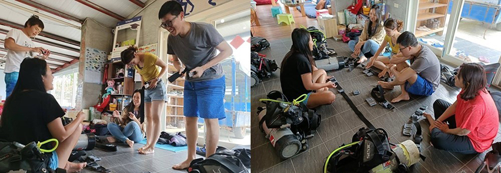 |
裝備教學結束後，就來去換泳裝後，穿好潛水裝備，來去泳池練習
| 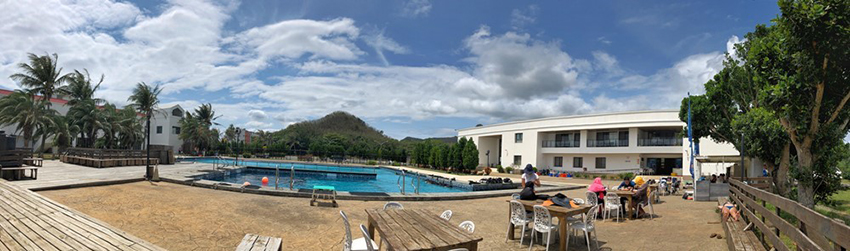 |
抵達墾丁戶外泳池，是一連串的水下練習，這天來的墾丁天氣實在是太好了，好到我都曬黑了，就是手跟額頭而已(所以建議可以自備防曬面罩/帽套、潛水手套)，因為身上有穿長袖的防寒衣，所以其他地方都沒有變黑~ 下水的時候，記得也不要塗防曬喔！ 因為你的面鏡可能會不服貼、會進水。
| 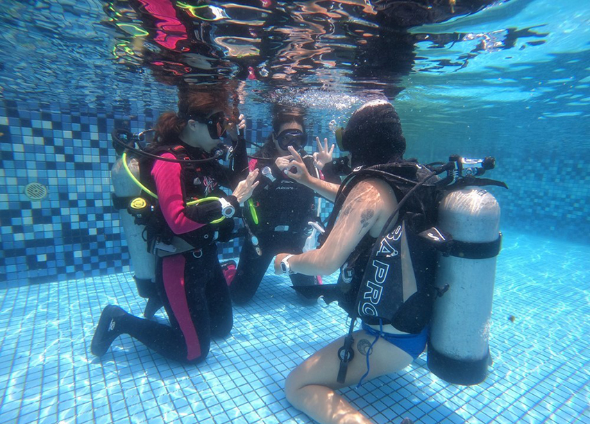 |
第一支氣瓶潛完後，會休息約一小時(含用餐+午覺)，接下來就是第二支氣瓶，會帶你到旁邊較深5米和10米地方練習和跳水。
| 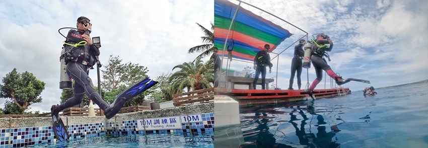 |
不會游泳的我，其實在墾丁泳池練習，到不能踩到地的地方，都頗緊張，反倒是在海裡，我比較沒那麼緊張耶~~~因為海裡真的好美(被轉移注意力了？哈)
| 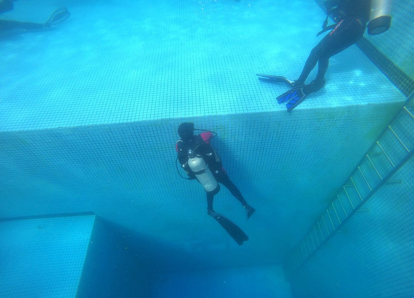 |
潛水所要學的，除了要練習當你遇到狀況如何自救，也要練你的中性浮力，就是要靠自己的呼吸吐氣慢而長，來達成在水中的平衡，也要學控制耳壓平衡。(而我總是幾乎都在最底部，不然就是越游越上去了😓) 第一天的潛水練習，真有累到…
| 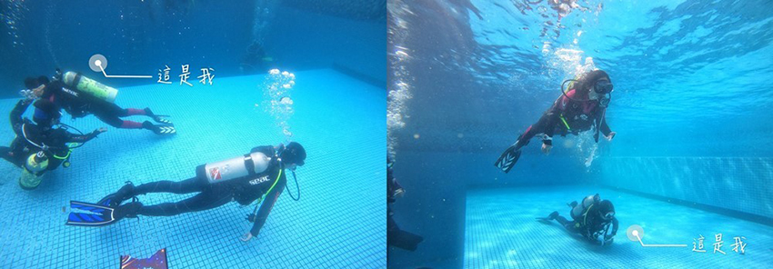 |
在墾丁三天兩夜潛水考照，還有一項任務，就是你要把PADI教材讀完，因為你後面有筆試需要測驗。而我沒有讀完，但我有先把 PADI的影片 看完、把這本的習題都給寫完，對答案後再看看自己哪裡寫錯的~ 基本上你筆試應該就OK沒問題。
藍洞潛水 PADI OW考照 Day2
✔半天的海洋潛水 (2支氣瓶，船潛) + 室內課程 + 筆試 (單選題25題，及格分數須滿75分以上)
集合時間是07:30起床吃早餐，09:00換好裝備出發前往海洋練習，是去南灣的眺石潛水。藍洞潛水，居然有自己的海上計程車和海洋平台！！ 你不用背著很重的氣瓶走沿岸下潛 (*如果你會暈船的話，記得要先吃暈船藥)。
| 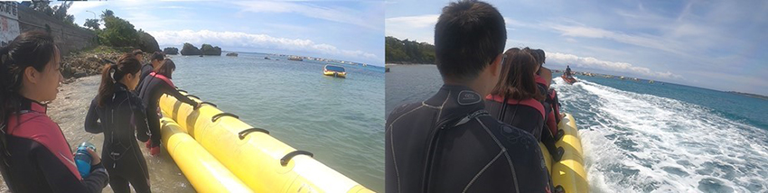 |
在眺石，我們有看到海龜耶！！！ 覺得開心💚雖然我在海裡，也是頗緊張，但似乎比昨天在泳池，好很多了~因為我的中性浮力一直都做得不是很好，到了海裡，沒有一直碰到沙地或珊瑚，其實我好怕會傷到珊瑚喔...此時就要放輕鬆~~身上穿的BCD裝備，配合呼氣吐氣和按壓洩氣充氣來調節你的上升和下降。教練都會在旁邊相隨，所以你不用怕😅而我自己學得比較慢...我的潛伴都好棒~很快就都學會了！！
| 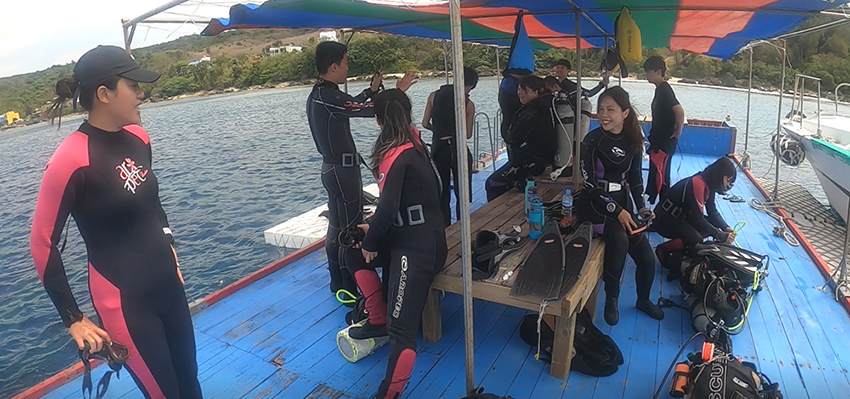 |
在海洋練習，有兩支的氣瓶，潛水的時間每次是30~40分鐘，潛水的深度大約是在10~14公尺，中間會休息30分鐘左右。跳水記得腳要撐到最大，拍照起來才會美！
| 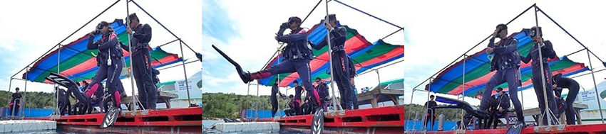 |
下水後，注意自己的耳壓平衡，拉著繩索，慢慢前進往下潛，做好中性平衡後，就可以放手出發囉！
| 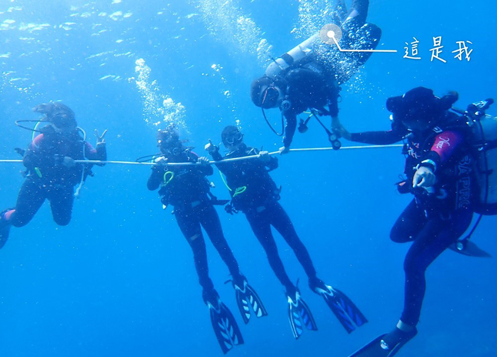 |
我就說....我很容易直接沉到底 ...實在是因為緊張關係，無法放很鬆，我的呼吸也都偏急促，所以中性平衡都做得不是很好😔同伴們都是會游泳的人，似乎都顯得不緊張耶！
| 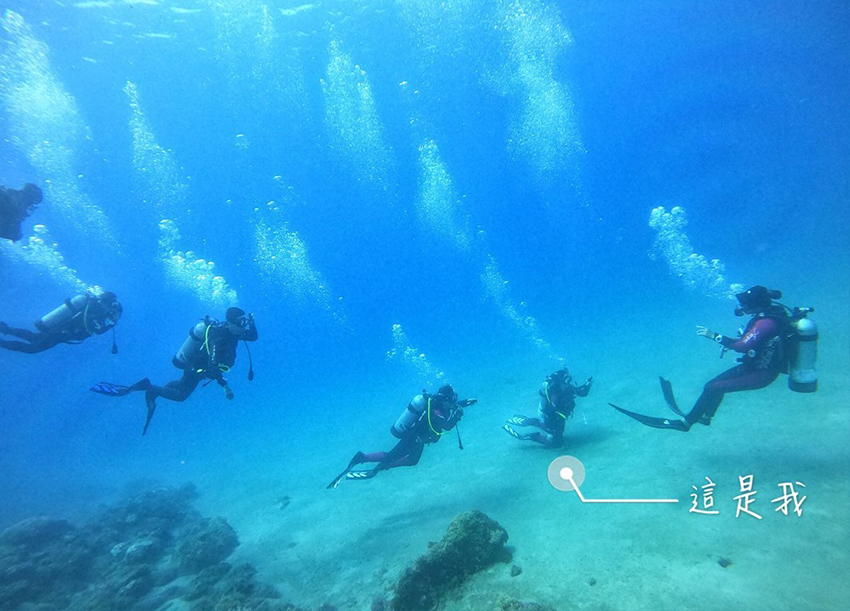 |
此時，教練勾勾來拯救我了😓雖然在水下沒辦法講話，只能靠手勢和眼神的默契，終於我也慢慢地找到我的呼吸節奏了…
| 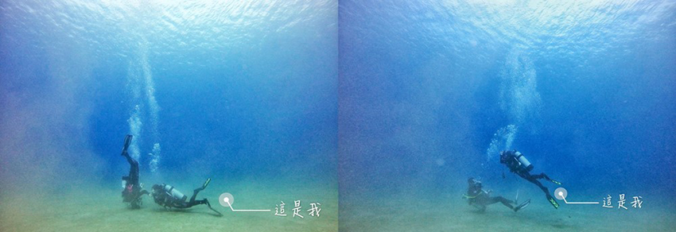 |
雖然我有時也是會，突然的慢慢往上浮去了...這時候換教練MOMO來拯救我，把我往下拉😓
| 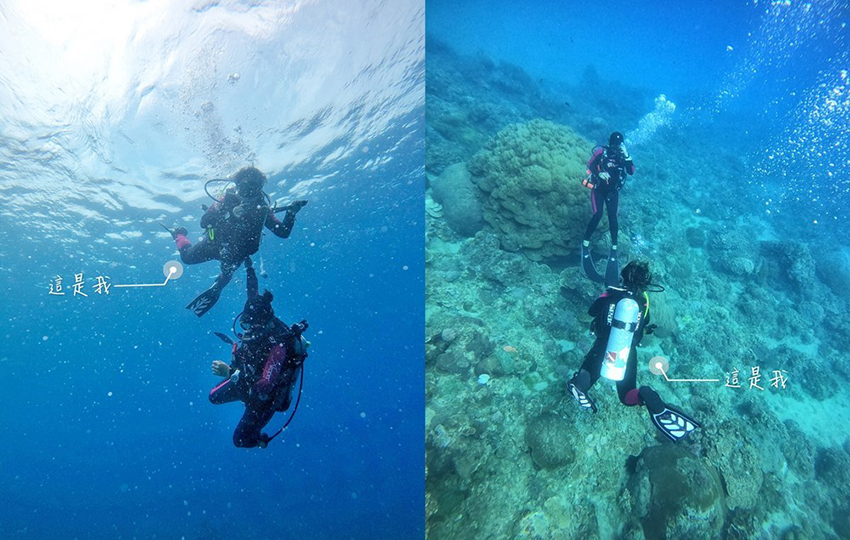 |
最後，終於有找到了自己的節奏，跟上了大家！！
| 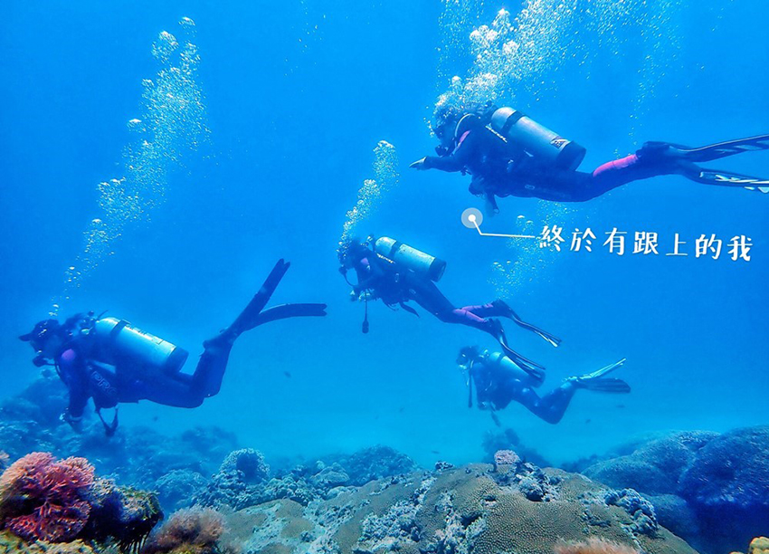 |
也看到了可愛的海龜！！！！ ( 藍洞潛水就是知道這裡附近有海龜出沒，所以才把海上平台建在這邊~~幸運的時候，就會看到海龜游來游去了🐢)可是…海龜的眼神，怎麼有眼神死的感覺 哈哈哈哈😂 嗨，很開心遇見你！
| 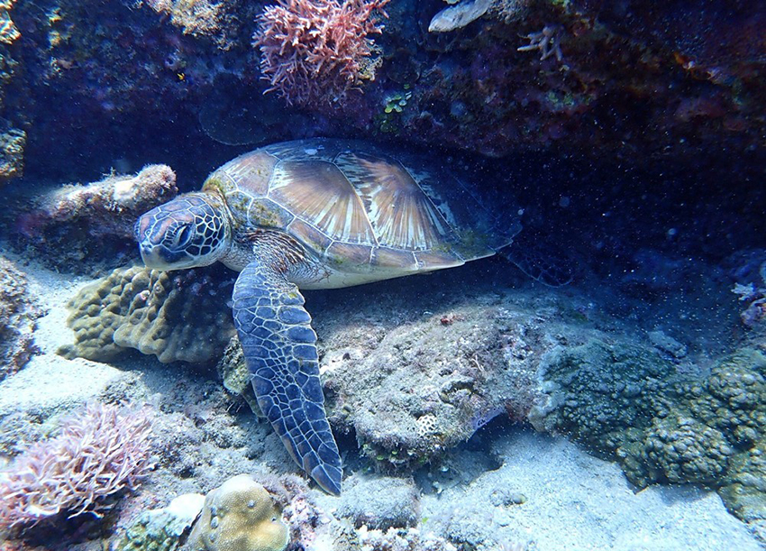 |
每潛完一支，都需要上岸休息，才再繼續潛第二支。如何知道自己該休息多少時間，可以看這張潛水表，室內課程也會教你怎麼看 (藍洞潛水，也有個很不錯的地方是，會免費提供你一支下水的潛水錶，學如何看時間和下水深度，這支錶通常都不便宜的呢！ )
| 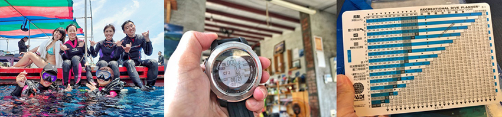 |
結束了海洋練習課程後，就回來換裝和吃飯休息，下午要來上課 (其實好想睡覺阿哈哈💤)
| 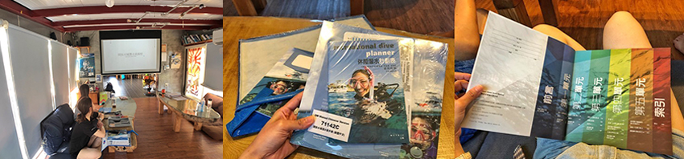 |
其實本來筆試，應該是要明天Day3下午才要考，而潛店在Day1的時候，有問我們說你們要提前Day2就考嗎? 我們就說好歐，可以~想說早點考完的話，最後一天就不用等到下午五點才結束返北了，因為回到台北都晚上九點十點了。只不過早點考比較累的就是，你需要密集的研讀寫完習題，所以第二天差不多晚上十點半才結束就寢😴
關於筆試的部分，是單選題25題，及格分數須滿75分以上，有聽教練說，如果你沒考過的話，就是會再考一次(須滿80分)，再不過再考一次(須滿85分)...試卷有分ABC卷。
藍洞潛水 PADI OW考照 Day3
✔半天的海洋潛水 (2支氣瓶，船潛)
集合時間是07:30要起床吃早餐，09:00換好裝備出發前往海洋練習，是去燕子礁。會載到後壁湖搭船過去潛水，一樣是不用背著很重的氣瓶走岩岸 (*如果你會暈船的話，記得要先吃暈船藥) 因為有潛兩天的練習了，經驗也有慢慢的增加，而身上的痠痛也出現了...覺得好累 怎麼比上班還累？😂只要再潛完最後一天，就可以拿到證照了！！ Fighting ！！
| 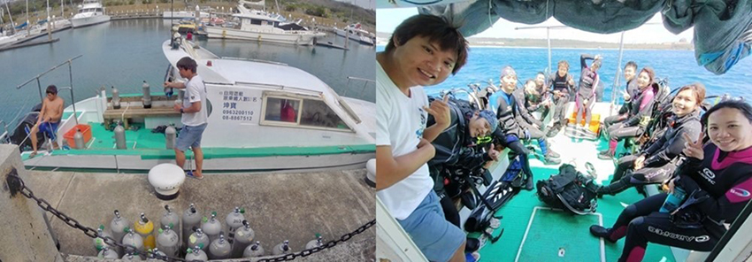 |
藍洞潛水，有自己的船，出航去囉~每一次的跳海，我其實都滿緊張的耶😅注意人不要靠近船的引擎，抓旁邊的繩索喔！
| 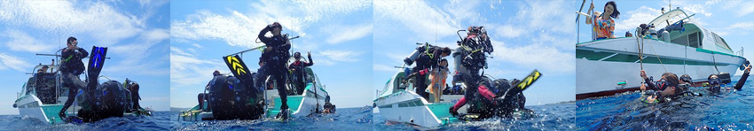 |
注意人不要靠近船的引擎，抓旁邊的繩索喔！第三天的海洋潛水，也是有兩支的氣瓶，分別潛水的時間每次是30~40分鐘，潛水的深度大約是在10~14公尺，中間會休息30分鐘左右。這裡的海下世界，就沒遇到海龜了，不過也一樣有看到可愛的尼莫魚，還有很多我不知道叫什麼的魚🐠
| 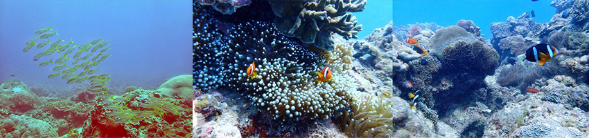 |
覺得海底世界真的很美麗💙只不過我覺得還是沒有綠島蘭嶼的清澈漂亮！ 只不過蘭嶼，都是大深度且有流，會建議大家在本島練到AOW以上的等級，再前往比較安全，也能去比較多漂亮的地方~
| 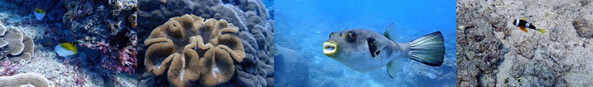 |
終於！！ 結束了最後一天的潛水，回來清洗裝備，再去換裝梳洗、吃完午餐、休息等領紙本PADI OW證書，就可以回家啦~之後PADI會發電子檔的證照，記得再到email看或是可能會被歸類在垃圾桶郵件喔！
| 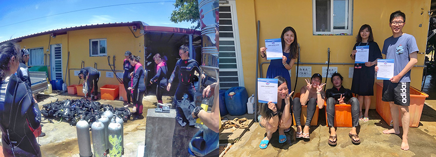 |
這三天兩夜的考照，覺得很充實，從不會到學會，也是有小小的成就感！ 藍洞潛水的教練也是挺親切的，雖然偶爾會有點沒有笑臉 (因為我真的是學得有點慢慢的)，但都還是很有耐心地指導我😅